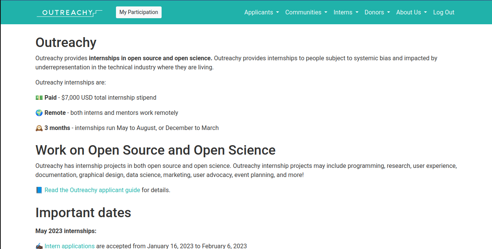
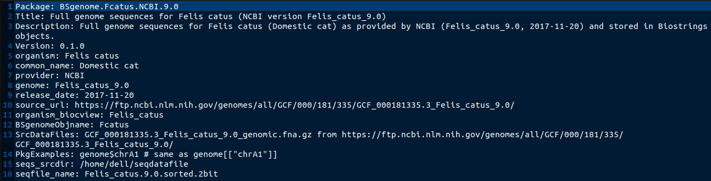
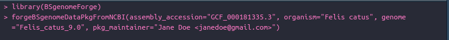

Introduction
The world of open source is vast and full of opportunities to change both the world and oneself, but may appear daunting to someone naive and new to the field. Thankfully, countless initiatives exist to narrow the gap between disadvantaged individuals who wish to make their first contributions, and open source communities.
Outreachy is one of these projects, and it aims to provide internships to people impacted by underrepresentation in the technical industry where they are living. Through Outreachy, we were able to work for 12 weeks as interns at Bioconductor, and kickstart our introduction to the open source world of computational biology. Perhaps you’re an experienced biologist who finds themselves using the tools we’re working on, and would like more information about them. Or maybe you’re eager to make your mark as an Outreachy applicant, interested in Bioconductor, and would like to know our experience. Whichever the reason, I hope this blog post is extra informative to whatever you’re looking for!
Outreachy
Outreachy is a program that offers a 12 week paid remote internship in open source and open science. Outreachy provides internships to people subject to systemic bias and underrepresented in tech. Outreachy interns work with experienced mentors from open source communities, and internship projects may include programming, user experience, documentation, graphical design, data science, marketing, user advocacy, or community event planning.

The application process is in three stages and an applicant chooses 1-2 projects they would like to apply to and makes contributions to them to be eligible for selection.
Through Outreachy, we were selected to work with Bioconductor on the different projects we had applied to.
Bioconductor
Bioconductor had two projects in the application period for the December 2022 internship round. We will go through what our projects are about and our experiences so far.
BSgenomeForge Project
BSgenome is a Bioconductor package with many uses, among which one of them is forging BSgenome data packages. Forging is another word used to mean creating a package. BSgenome is a combination of BS, which is short for Biostrings a package used for manipulation of biological strings, and genome, which is the complete set of genetic material in an organism. BSgenome data packages have many applications in the real world, especially in light of the current COVID-19 pandemic. They can be used to find the COVID-19 genomic sequence and study it, and even be used by environmental scientists to look for COVID-19 in wastewater. There are several reasons the average Bioconductor user would forge a BSgenome data packages; in order to search for particular DNA patterns in a genome, maybe to compute GC content and other basic statistics or even to extract the DNA sequences for some regions of interest like genes or CDS and translate them into amino acid sequences. However, the current process of forging a BSgenome data package is quite long and confusing, with a few redundant processes like creating a seed file before calling the forgeBSgenomeDataPkg function on the seed file to create the package.

The BSgenomeForge project aims to simplify the whole process, by allowing the user to use one function to create the package. It’s a solution that we hope is able to cut down the time one takes to forge a package, and make the process much less confusing and error-prone to less experienced users.

Sweave2Rmd Project
The sweave2rmd project is a project for converting vignettes from sweave to Rmarkdown. Most Bioconductor packages documentation have been written using a mixture of Latex and R code then rendered as PDF files. In this project, we are converting these files to R markdown then rendering the files as HTML files.
Majority of the documentation availabe now is being writtten in markdown and rendered as HTML files. HTML files are easier to share, access and can be viewed online/offline without special applications. HTML files also offer more interactivity as compared to PDF files since you can include links to other parts of the document especially long documents. Markdown and HTML files are also easily readable across different devices and do not need to be reformatted for every device type. Since Bioconductor has also been around for over 20 years, most of the vignettes are old and need modernization. The sweave2rmd project will generally help bring a large number of “mature”(older) vignettes to the modern era.
Rmarkdown also has simpler syntax as compared to Latex and beginners can find it easier to use.
Sweave- Sweave enables the embedding of R code within LaTeX documents to generate a PDF file that includes narrative and analysis, graphics, code, and the results of computations.
Sweave files effectively let you write a file using the TeX typesetting system while directly incorporating the results of your R code into your TeX file.
Rmarkdown(Rmd)- The .rmd files - known as RMarkdown files - let you write Markdown files similarly incorporating your R code into the file.
Our experience interning with Bioconductor
Through Outreachy, we have been interning at Bioconductor for over a month now. It has been a great experience, not only to the world of open science and open source, but also learning how to work collaboratively in a remote environment. Getting up to speed with many concepts in a short period of time was an uphill task, but thanks to our incredible mentors, Jen Wokaty and Hervé Pagès, the journey has been smoother than a pebble.
Kirabo’s experience working on BSgenomeForge

Hi, my name is Atuhurira Kirabo Kakopo, and I’m from Kampala, Uganda. I am on the cusp of graduating with a bachelor’s degree in Software Engineering. Academically, I thrived in my data science and artificial intelligence classes, which was because I found these topics extra interesting. Because of this, R ended up as my programming language of choice, because it was used extensively in the aforementioned class projects.
When I started out in the Outreachy contribution period, I filtered out which projects I wanted to apply to based on my skill level. I was glad to find that on top of requiring R programming skills, Bioconductor was a project that focused on computational biology, a field that I didn’t study but had an interest in. During the contribution round, I applied to the Refactor the BSgenomeForge tools project because I felt it had the skills required to make the best of this task.
Working as an Outreachy intern in Bioconductor has been honestly the best introduction to the world of open source and real life programming for me. I have been lucky enough to learn from experienced open source contributors, and I am certain I can apply the skills I have gained in creating the BSgenomeForge package in almost any part of my career, from writing technical documentation to proper coding practice.
Working on the BSgenomeForgeproject, I feel like I have learnt a lot, not just about making packages, but how to structure my code, how to make it readable for other users, how to communicate with others, etc. Hervé certainly makes everything easier, by taking me through task workflows, and offering helpful pointers when I’m stuck. I’ve had a chance to get involved on an interesting, highly collaborative open source project, one that is used by so many people, and I have been given the opportunity to create something that makes their work just a bit easier. Everyday is an opportunity to learn something new, something I definitely do not take for granted. Overall, my experience has been a turning point. You can read more about it here, on my blog.
Beryl’s experience working on sweave2rmd

I am Beryl Kanali from Nairobi, Kenya. I graduated in 2021 with a bachelor’s degree in Mathematics and Computer Science which led me to choosing Data Science as a career of choice. I have always been interested in biology, life sciences and research in these areas and even thought of doing medicine at some point but I was more drawn to Mathematics and technology. After school I wanted to practice data science in areas related to biology, life sciences or pharmacy. Unfortunately, Data Science is not widely used in those areas in my country.
When looking for a project to contribute to, I wanted something I am really interested in when it comes to domain knowledge and seeing what Bioconductor does, I was immediately impressed and sweave2rmd was the only project I contributed to.
I believe the exposure and learning I am getting from Bioconductor will help advance my career in the right direction. Getting to work with people from different fields and learn how different aspects of technology can be applied in computational biology and bioinformatics helps improve my skills and understanding of the intersection between technology and other sciences.
I have been interning for one and a half months now and it has been awesome so far. I have improved my coding skills, communication skills and team work. Open source requires a lot of learning and I have learnt a lot so far(Git skills, R programming and writing good documentation). My mentor Jennifer Wokaty has been very supportive and helpful. Apart from my mentor, the Bioconductor team has also been helpful in terms of providing feedback and answering questions whenever I am stuck.
I have had the chance to learn and interact with several Bioconductor packages and learn a few things from them. I now have a better understanding of building packages and creating documentation.
I look forward to continuing learning, contributing and helping make the sweave2rmd project a success. Here is the link to my blog where I have been writing about my experience as an outreachy intern with bioconductor.
Conclusion
Bioconductor is made up of >2000 software packages, and fosters an equally diverse, welcoming community. It has been an awesome experience to interact with the community, contribute to the work being done within the project and learn a lot! We encourage any open source enthusiasts, or individuals with an interest in computational biology to contribute to the project, and welcome themselves to a whole new adventure!
Here is some information for anyone interested in being part of Outreachy.
The next Outreachy cohort starts on May 29, 2023, and prospective interns encouraged to apply before February 6, 2023. Here is the link to apply
The application deadline for community members who are interested in submitting mentorship projects for the next cohort is February 24, 2023. Here is the link to apply
© 2024 Bioconductor. Content is published under Creative Commons CC-BY-4.0 License for the text and BSD 3-Clause License for any code. | R-Bloggers